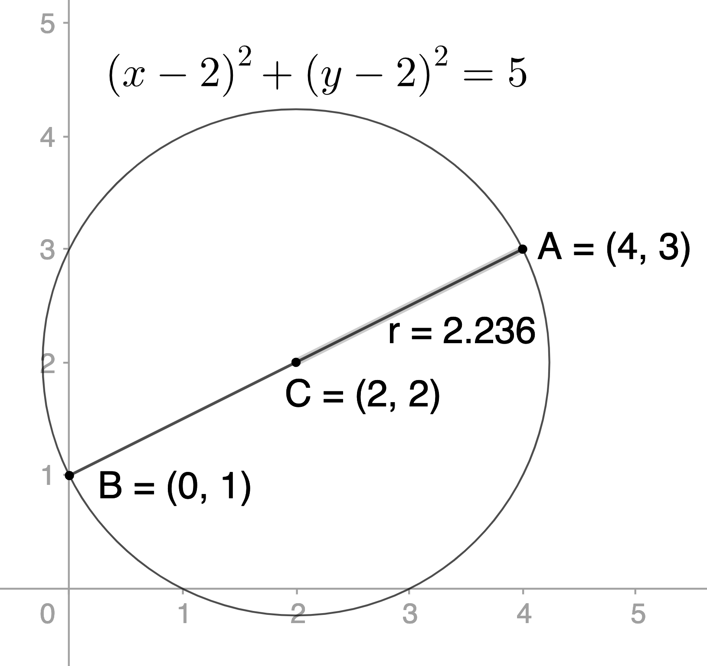

Notes: These solutions are provided as-is,
for informational purposes only, with no warranty of any kind, expressed or implied, including that of correctness, adequacy, and/or suitability for any purpose, whatsoever. Corrections are welcome and should be emailed to selectedsolutionsdotnet@gmail.com.
Purple font indicates clicking on the text will return you to your prior place.
| Section 1: The Distance and Midpoint Formulas | |||||||||
|---|---|---|---|---|---|---|---|---|---|
| 1.48 | 1.52 | 1.58 | 1.64 | ||||||
| Section 2: Graphs of Equations in Two Variables; Intercepts; Symmetry | |||||||||
| 2.38 | 2.46 | 2.48 | 2.50 | 2.54 | 2.58 | 2.62 | 2.70 | ||
| 2.70 | 2.74 | 2.78 | 2.84 | 2.90 | |||||
| Section 3: Lines | |||||||||
| 3.22 | 3.26 | 3.28 | 3.42 | 3.44 | 3.54 | 3.56 & 58 | |||
| 3.64 | 3.68 | 3.70 | 3.96 | 3.100 | 3.110 | 3.114 | 3.116 | ||
| 3.120 | 3.126 | ||||||||
| Section 4: Circles | |||||||||
| 4.10 | 4.20 | 4.30 | 4.38 | 4.40 | 4.50 | 4.54 | |||
| Section 5: Variation | |||||||||
| 5.6 | 5.10 | 5.14 | 5.20 | 5.26 | 5.34 | 5.40 | 5.44 | ||
1.48) Find all points on the \(y\)-axis that are 6 units from the point \((4, -3)\).
Sln: If a point is on the \(y\)-axis, its \(x\)-coordinate is \(0\), so we need to find all points \((0,y)\) such that the distance between them and \((4,-3)\) is \(6\). Now, the distance between \((0,y)\) and \((4,-3)\) is \(\sqrt{(4-0)^2+(-3-y)^2}\), so we set this equal to \(6\): \[\sqrt{(4-0)^2+(-3-y)^2}=6\]and solve for \(y\): \(\sqrt{(4-0)^2+(-3-y)^2}=6 \implies 16+(-3)^2+2(-1)(-3)y+(-y)^2 = 36 \implies y^2 + 6y + 25 - 36=0 \implies \) \(y^2+6y-11=0 \implies \) \(y=\displaystyle \frac{-6\pm\sqrt{36-4(1)(-11)}}2 = \frac{-6\pm\sqrt{80}}2 = \frac{-6\pm\sqrt{(16)(5)}}2 = \frac{-6\pm4\sqrt5}2 = -3\pm2\sqrt5 \implies\) the required points are: \[\boxed{\left(0,-3+2\sqrt5\right), \left(0,-3-2\sqrt5\right)}\]
Check: \(\sqrt{(4-0)^2+(-3-(-3\pm2\sqrt5))^2} = \sqrt{16+(\pm2\sqrt5)^2} = \sqrt{16+4(5)} = \sqrt{16+20} = \sqrt{36} = 6~\checkmark\)
1.52) Geometry An equilateral triangle is one in which all three sides are of equal length. If two vertices of an equilateral triangle are \((0,4)\) and \((0,0)\), find the third vertex. How many of these triangles are possible?
Sln: Here’s the situation: we need to find the coordinates of the point pictured. We have that \(\sqrt{(x-0)^2+(y-0)^2} = 4 \implies x^2+y^2=16\), and that \(\sqrt{(x-0)^2+(y-4)^2} = 4 \implies x^2 + y^2-8y+16 = 16 \implies x^2+y^2 = 8y\). Together these \( \implies 8y=16\) (since both \(=x^2+y^2\)) \(\implies y=2\) (which we could have concluded from geometrical considerations, but it’s nice to know that algebra gives us a consistent result). Substituting this into \(x^2+y^2 = 16 \implies x^2+2^2 = 16 \implies x^2 = 12 \implies\) \(x=\pm\sqrt{12} = \pm\sqrt{(4)3} = \pm2\sqrt3\), i.e., there are \(\boxed{\text{two such triangles}}\), one whose third vertex is \(\boxed{\left(2\sqrt3,2\right)}\), and another whose third vertex is \(\boxed{\left(-2\sqrt3,2\right)}\):
1.58) Given \(P_1 = (7, 2); P_2 = (-4, 0); P_3 = (4, 6)\), find the length of each side of the triangle determined by these points and state whether it is isosceles, right, both or neither.
Sln: \(\left|\overline{P_1P_2}\right| = \sqrt{(7-(-4))^2+(2-0)^2} = \sqrt{11^2+2^2} = \sqrt{121+4} = \sqrt{125} = \sqrt{(25)(5)} = \boxed{5\sqrt5}\)
\(\left|\overline{P_2P_3}\right| = \sqrt{(-4-4)^2+(0-6)^2} = \sqrt{(-8)^2+(-6)^2} = \sqrt{64+36} = \sqrt{100} = \boxed{10}\)
\(\left|\overline{P_1P_3}\right| = \sqrt{(7-4)^2+(2-6)^2} = \sqrt{3^2+(-4)^2} = \sqrt{9+16} = \sqrt{25} = \boxed5\)
and since \(5^2+10^2=125=(5\sqrt5)^2\), these are the vertices of a \(\boxed{\text{right triangle.}}\)
Check:
(Graphic, side lengths, and angle measure calculated using the online, Web-based graphing calculator GeoGebra.)
1.64) Distance of a Moving Object from a Fixed Point A hot-air balloon, headed due east at an average speed of 15 miles per hour and at a constant altitude of 100 feet, passes over an intersection (see figure in text, or draw one). Find an expression for the distance \(d\) (measured in feet) from the balloon to the intersection \(t\) seconds later.
Sln: Since it’s not exactly clear whether the problem author means the distance including the altitude or not, we’ll find expressions for both (we need an expression for the distance not including the altitude—the lateral
distance—anyway, because the distance including the altitude—the total
distance—requires such an expression). The lateral distance of the balloon from the intersection is simply its speed times time elapsed...but wait a sec: we’re to give the expression for \(d\) in feet after \(t\) seconds, but the speed is given to us in miles per hour, so we need to perform a unit conversion:
\(\displaystyle \frac{15\cancel{\text{ miles}}}{1\cancel{\text{ hour}}} \times \frac{5280\text{ feet}}{1\cancel{\text{ mile}}} \times \frac{1\cancel{\text{ hour}}}{60\cancel{\text{ minutes}}} \times \frac{1\cancel{\text{minute}}}{60\text{ seconds}} = \frac{\cancel{15}1\cdot\cancel{5280}88\text{ feet}}{\cancel{60}4\cdot\cancel{60}1\text{ second}} = 22\text{ fps}\)
so the expression for the lateral distance, in feet, after \(t\) seconds is: \[\boxed{d_{lat} = 22t}\]
The total distance is obtained from the distance formula: taking the intersection, at ground-level, as the origin, we’ll use the lateral distance as the \(x\)-coordinate,
the altitude as the \(y\)-coordinate.
Then \[d_{tot} = \sqrt{(22t-0)^2+(100-0)^2} = \boxed{\sqrt{484t^2+10,000}}\]
where \(t\) is in seconds and \(d_{tot}\) is in feet.
wrt = with respect to
2.38) Given \(P=(-3,0)\), state the coordinates of the point symmetric to it wrt each axis and the origin.
Sln: The point symmetric to \((a,b)\) wrt to the \(x\)-axis is \((a,-b)\), so the point symmetric to \((-3,0)\) wrt to the \(x\)-axis is \((-3,-0) = \boxed{(-3,0)}\), i.e., itself; the point symmetric to \((a,b)\) wrt to the \(y\)-axis is \((-a,b)\), so the point symmetric to \((-3,0)\) wrt to the \(y\)-axis is \((-(-3),0) = \boxed{(3,0)}\); and the point symmetric to \((a,b)\) wrt to the origin is \((-a,-b)\), so the point symmetric to \((-3,0)\) wrt to the origin is \((-(-3),-0) = \boxed{(3,0)}\), i.e., the same as the point that’s symmetric to it wrt to the \(y\)-axis (which is true of all points on the \(x\)-axis; which points have this property wrt to the origin and the \(x\)-axis?)
In Problems 46, 48, and 50, the graph of an equation is given. a) Find the intercepts; and b) indicate whether the graph is symmetric wrt the \(x\)-axis, the \(y\)-axis, [and/]or the origin.
Sln: The best one can provide from a graph is a best estimate
; in this case, it looks pretty certain that the \(x\)-intercepts are intended to be \(\boxed{(-4,0), (0,0), (4,0)}\); the only \(y\)-intercept is \(\boxed{(0,0)}\); the graph is not its mirror image
wrt to either axis, so it is \(\boxed{\text{not symmetric wrt to either axis}}\); but it does appear that for every point \((x,y)\) on the graph, \((-x,-y)\) is also on the graph (equivalently, reflecting
the graph in the line \(y=x\) and then in the line \(y=-x\) appears to leave the graph unchanged, i.e., invariant), so it does appear to be \(\boxed{\text{symmetric wrt to the origin.}}\)
Sln: The \(x\)-intercepts appear to be the segment from \((-1,0)\) to \((2,0)\), inclusive, i.e., \(\boxed{\{(x,0)|-1\le x \le 2\}}\) (the set of ordered-pairs \((x,0)\) such that \(-1 \le x \le 2\)
); the \(y\)-intercept is the origin, i.e., \(\boxed{(0,0)}\), and the graph has \(\boxed{\text{no symmetries.}}\)
Sln: The graph appears to have \(\boxed{\text{no intercepts}}\); and \(\boxed{\text{symmetry wrt the }x\text{-axis only.}}\)
2.54) Complete the following graph so that it is symmetric wrt the \(y\)-axis:

Sln: We need to reflect
the given graph through
the \(y\)-axis as if said axis were a mirror:
In Problems 58, 62, and 70, list the intercepts and test for symmetry.
2.58) \(y=\sqrt[\large5]x\)
Sln: \(\sqrt[\large5]0 = 0\) and \(0=\sqrt[\large5]x \implies x=0\), so \(\boxed{(0,0)}\) is the only intercept, \(x\) and \(y\); \(\sqrt[\large5]{-x} = -\sqrt[\large5]x = -y \ne y\) in general, so \(\boxed{\text{not symmetric wrt the }y\text{-axis}}\); \(-y=\sqrt[\large5]x \implies y=-\sqrt[\large5]x \implies y=\sqrt[\large5]{-x} \ne \sqrt[\large5]x\) in general, so \(\boxed{\text{not symmetric wrt the }x\text{-axis}}\); \(-y=\sqrt[\large5]{-x} \implies y=\sqrt[\large5]x\), so \(\boxed{\text{symmetric wrt the origin.}}\)
Check: 
2.62) \(4x^2+y^2=4\)
Sln: \(4(0)^2+y^2=4 \implies y^2=4 \implies y = \pm2 \implies \boxed{y\text{-intercepts are }(0,2),(0,-2)}\); \(4x^2+0^2=4 \implies x^2=\frac44=1 \implies x=\pm1 \implies \boxed{x\text{-intercepts are }(1,0),(-1,0)}\); \(4(-x)^2+y^2=4x^2+y^2=4\) so \(\boxed{\text{symmetric wrt the }y\text{-axis}}\); \(4x^2+(-y)^2=4x^2+y^2=4\) so \(\boxed{\text{symmetric wrt the }x\text{-axis}}\); \(4(-x)^2+(-y)^2=4x^2+y^2=4\) so \(\boxed{\text{symmetric wrt the origin.}}\)
Check: 
2.70) \(y = \displaystyle \frac{x^4 + 1}{2x^5}\)
Sln: \(\displaystyle \frac{0^4 + 1}{2(0)^5} = \frac10\) which is undefined, so \(\boxed{\text{no } y\text{-intercept}}\); \(\color{red}{2x^5}\)\(\left[0 = \displaystyle \frac{x^4 + 1}{2x^5}\right] \implies 0=x^4+1 \implies x^4=-1\), which has no real solution, so \(\boxed{\text{no } x\text{-intercept}}\); \(\displaystyle \frac{(-x)^4 + 1}{2(-x)^5} = \frac{x^4+1}{-2x^5} = -\frac{x^4+1}{2x^5} = -y \ne y\) in general, so \(\boxed{\text{not symmetric wrt the }y\text{-axis}}\); \(\displaystyle -y = -\frac{x^4+1}{2x^5} \ne \frac{x^4+1}{2x^5}\) in general, so \(\boxed{\text{not symmetric wrt the }x\text{-axis}}\); \(\displaystyle -y = \frac{(-x)^4+1}{2(-x)^5} = \frac{x^4+1}{-2x^5} \implies y = \frac{x^4+1}{2x^5}\), so \(\boxed{\text{symmetric wrt the origin.}}\)
Check:
2.74) (Instead of drawing a quick sketch) generate a graph of \(y=\displaystyle \frac1x\) using a graphing utility.
Sln: You should get something like this:
2.78) Find \(a\) so that \((a, -5)\) is a point on the graph of \(y = x^2 + 6x\).
Sln: \((a,-5)\) being on the graph of
\(y = x^2 + 6x\) means that \(-5 = a^2 + 6a\) must be a true statement, i.e., we need to solve \(-5 = a^2 + 6a \implies 0=a^2+6a+5=(a+5)(a+1) \implies \boxed{a = -5}\) or \(\boxed{a = -1}\)
Check: 
2.84) Find the intercepts and symmetries (if any) of \(16y^2 = 120x - 225\).
Sln: \(16y^2 = 120(0) - 225 \implies y^2 = -\frac{225}{16}\) which has no real solution, so \(\boxed{\text{no } y\text{-intercept}}\); \(16(0)^2 = 120x - 225 \implies 120x=225 \implies x = \frac{225}{120} = \frac{15}8\) so \(\boxed{x\text{-intercept} = \left(\frac{15}8,0\right)}\); \(16(-y)^2 = 16y^2 = 120x - 225\), so \(\boxed{\text{symmetric wrt the }x\text{-axis}}\); \(120(-x) - 225 = -120x-225 \ne 120x-225\), so \(\boxed{\text{not symmetric wrt the }y\text{-axis}}\); \(16(-y)^2 = 16y^2 = 120x-225 \ne 120(-x)-225\), so \(\boxed{\text{not symmetric wrt the origin.}}\)
Check:
2.90) An equation is being tested for symmetry with respect to the \(x\)-axis, the \(y\)-axis, and the origin. Explain why, if two of these symmetries are present, the remaining one must also be present.
Sln: If the graph is symmetric wrt the \(x\)-axis, that means substituting in \(-y\) for \(y\) (and simplifying) returns back
exactly what one had before the substitution (the technical way of expressing this is that such a substitution leaves the equation invariant); and similarly wrt \(-x\) and \(x\) for symmetry wrt the \(y\)-axis; so if a graph is symmetric wrt to both axes, that means substituting in \(-x\) for \(x\) and \(-y\) for \(y\) leaves the graph invariant; but that is the test for symmetry wrt the origin! (The explanation for why symmetry wrt to either axis and the origin implies symmetry wrt the other axis is similar and is left to the reader.)
3.22) Graph and give the slope of the line passing through \((2, 0)\) and \((2, 2)\)
Sln: Plug the coordinates into the slope formula: \(\displaystyle \frac{y_2-y_1}{x_2-x_1} = \frac{2-0}{2-2}=\frac20 "=" \boxed{\text{undefined}} \implies\) it’s a vertical line who’s \(x\)-coordinate is \(2\): 
In Problems 26 and 28, graph the line containing the given point and slope.
3.26) \(P = (1, 3); m = \displaystyle -\frac25\)
Sln: The graph illustrates the (idea of the) procedure:
 (Of course, the same idea can be executed in an infinite number of ways: for example, you could do the same thing, but going up and to the left; the key thing is that the ratio of the
(Of course, the same idea can be executed in an infinite number of ways: for example, you could do the same thing, but going up and to the left; the key thing is that the ratio of the signed rise
to the signed run
must be \(-\frac25\).)
3.28) \(P = (2, -4); m = 0\)
Sln: \(m=0 \implies \) no change in \(y\) for any change in \(x\), so to find a second point (remember: two points determine a unique straight line), all we have to do is choose a different \(x\)-coordinate, say \(0\), and keep the \(y\)-coordinate the same: \((0,-4)\):
(Note: for
efficiency of presentation,
we’ve made the \(y\)-scale twice the \(x\)-scale: one is always at liberty to make axis scales different—the reader should add this to his/her graphing toolset
—but when one does so, one should call attention to that fact.)
In Problems 42 and 44, find an equation of the line \(L\).
3.42) \(L\) is parallel to \(y = –x\) and passes through \((1,2)\).
Sln: Note: the first two methods below hinge on reading off
the slope of the given line: \(y=-x \implies m=-1\); and all the methods rely on the fact that parallel lines have equal slopes.
Method 1: Using the point-slope
form of the equation of a line: \(y-y_{\text{given}} = m(x-x_{\text{given}}) \implies (y-2) = -1(x-1) \implies \boxed{y = }-x+1+2 = \boxed{-x+3}\) or \(\boxed{x+y=3}\).
Method 2: Using the slope-intercept form: \(2= -(1) + b \implies b = 3 \implies \boxed{y=-x+3}\)
Method 3: Using the general form: in general, if \(L\) is parallel to a line whose general form is \(ax+by=c\), then the general form of \(L\) will be \(ax+by=d\) for some \(d\ne c\) (Proof?). So \(y=-x \implies x+y=0 \implies \) the general form of \(L\) will be \(x+y=d\); we determine \(d\) from the fact that \((1,2)\) must make the equation a true statement: \(d=1+2=3 \implies\) the general form is: \(\boxed{x+y=3}\).
Method 4: Using a graphing utility
(in this case, GeoGebra):

3.44) \(L\) is perpendicular to \(y = –x\) and passes through \((-1,1)\).
Sln: Here we use the fact that, for lines of non-zero slope (lines of zero slope—horizontal lines—are perpendicular to lines with undefined slope, i.e., vertical lines, and thus we have to exclude such lines from our general statement for it to be true), the product of the slopes of perpendicular lines equals \(-1\). The reader is encouraged to use all three algebraic methods illustrated in Problem 42 above to deduce the required equation. (Hint for Method 3
: if the general form of the given equation is \(ax+by=c\) then the general form of the equation of any perpendicular line is \(bx-ay=d\) for some \(d\), not necessarily unequal to \(c\); proof?) I will give the solution found using GeoGebra:

In Problems 54, 56, 58, 64, 68, and 70, find an equation of the line with the given properties; express your answer using either the general form or the slope–intercept form (we will alternate, when possible).
3.54) \(x\)-intercept \(= -4\); \(y\)-intercept \(= 4\)
Sln: I chose this one to show the two-intercept
form of the equation of a line: \[\frac xa + \frac yb = 1\]
Why is this the two-intercept
form? Well, the \(y\)-intercept is where \(x=0\) and the \(x\)-intercept is where \(y=0\), and look what happens when we substitute those values in (but not at the same time): \(\displaystyle \frac0a+\frac yb = 1 \implies y=b\) and \(\displaystyle \frac xa+\frac 0b = 1 \implies x=a\): in this form, \(a\) is the \(x\)-intercept and \(b\) is the \(y\)-intercept! This can be useful when one needs to find both intercepts (but then it’s usually just easier to substitute in zero for \(x\) and \(y\) in whatever form of the equation you’re given and solve for the corresponding value of the other variable); but it’s most useful when one is given the intercepts, as in this problem, because one can then immediately write down the line’s equation: \[\frac x{-4} + \frac y{4} = 1 = -\frac14 x + \frac14 y.\]
Technically, this is a valid general form (there can be no requirement that the coefficients of the variables must be integers, because there are plenty of lines for which this would be impossible, e.g., \(x+\sqrt2 y = 0\): because \(\sqrt2\) is irrational, there’s no way to make the coefficients of both \(x\) and \(y\) simultaneously integers, and yet \(x+\sqrt2 y = 0\) is a perfectly valid line); but when one can write the general form such that all the coefficients (including the constant on the right side of the equation) are integers (or at least terminating decimals), i.e., when all the coefficients are rational numbers, it is traditional
to make this conversion. Also, it is traditional
to make the \(x\)-coefficient positive; so, multiplying through by \(-4\), we obtain: \[\boxed{x-y=-4}\]
Chk: \(x\)-intercept \(= -4 \implies (-4,0)\) should make the equation true: \(-4-0 = -4~\checkmark\), \(y\)-intercept \(= 4 \implies (0,4)\) should make the equation true: \(0-4 = -4~\checkmark\). As an additional check, here’s what GeoGebra calculates:
 (The reader should have no difficulty recognizing the equivalence of our result and GeoGebra’s.)
(The reader should have no difficulty recognizing the equivalence of our result and GeoGebra’s.)
3.56 & 58)
Slope undefined, containing the point \((3, 8)\); and vertical,
containing the point \((4, -5)\).
Sln: I grouped these together because in both of these cases—slope undefined
and line vertical
—the reader needs to just know,
i.e., learn by rote, that the equation of such a line has the form: \[x=\text{constant}.\]
How do we determine the value of the constant? Generally speaking, we have to either be given a point on the line (as we are in both of these cases), or figure out some way to figure out such a point; either way, once such a point is in our possession,
the constant is simply, necessarily (why?) the \(x\)-coordinate of that point! So the answer to 56 is \(\boxed{x=3}\) and the answer to 58 is \(\boxed{x=4}\).
3.64) Parallel to the line \(y = 5\), containing the point \((4, 2)\).
Sln: Parallel lines have equal slopes, and the slope of \(y=5\) is \(0\) (why?); for \((4,2)\) to be on the required line, we must have \(2 = 0(4)+b \implies b=2\); therefore, the equation of the required line is: \[\boxed{y=2}\]
(That was the hard
way to do this one: eventually, if not now, you should be able to reason as follows: any line parallel to \(y=5\) must have equation \(y=\) the \(y\)-coordinate of every point it passes through; the required line is stated to pass through \((4,2)\), so an equation for it must be \(y=2\)—done!)
3.68) Perpendicular to the line \(x - 2y = -5\), containing the point \((0, 4)\).
Sln: The reader is referred to the hint given in our solution to Problem 44 (above): if line \(L\) has equation \(ax+by=c, a,b \ne 0\), then it can be shown that line \(M \perp L\) has equation \(bx-ay=d\) for some \(d\). Thus our required line must have equation \(2x+y=d\), and we just need to determine \(d\), by substituting in the coordinates of the point our line is required to pass through: \(2(0)+4 = d \implies d=4\). Thus an equation of the required line is: \[\boxed{2x+y=4}\]
Check: \(2(0)+4 = 4~\checkmark\), \(2x+y=4 \implies y = -2x+4\) thus our line has slope \(-2\), while for the given line \(x-2y=-5 \implies 2y=x+5\) (pro tip
: add \(2y\) and \(5\) to both sides to avoid having to divide by a negative) \(\implies y = \frac12 x+\frac52 \implies \) the slope of the given line is \(\frac12\), and since \(\frac12(-2) = -1\), the lines are perpendicular.\(~\checkmark\)
3.70) Perpendicular to the line \(y = 8\), containing the point \((3, 4)\).
Sln: It’s necessary to just learn
that all lines of the form \(x=\) constant are perpendicular to all lines of the form \(y=\) constant; therefore, the line we require must have equation \(x=\) constant, and in order for \((3,4)\) to make such an equation a true statement, that constant must be \(3\); therefore, an equation of the required line is: \[\boxed{x=3}\]
Question to test understanding: In the above problems, why does Sullivan say an equation of the line,
not the equation of the line
? (After all, saying the line
implies the line is uniquely determined, whereas saying an equation
implies there’s more than one to choose from: which is true, or are they both true?)
In Problems 96 and 100, state the intercepts of the given equation.
3.96) \(5x + 3y = 18\)
Sln: The \(x\)-intercept occurs where \(y=0 \implies 5x+3(0)=18 \implies \boxed{\left(\frac{18}5,0\right)}\) is the \(x\)-intercept; the \(y\)-intercept occurs where \(x=0 \implies 5(0)+3y=18 \implies \boxed{(0,6)}\) is the \(y\)-intercept. Check using the double-intercept form of the equation: \(5x + 3y = 18 \implies \displaystyle \frac{5x}{18} + \frac{3y}{18} = 1 \implies \frac x{\left(\frac{18}5\right)} + \frac y6 = 1~\checkmark~\) Here’s the graph: 
3.100) \(-0.3x + 0.4y = 1.2\)
Sln: Even though it’s harder (arguably: it involves doing the same divisions), I’m going to do this one by converting the given equation form into the double-intercept form, which we begin by dividing both sides by \(1.2\): \[\frac1{1.2}\left[-0.3x+0.4y=1.2\right] \implies 1 = \frac{-0.3}{1.2}x + \frac{0.4}{1.2}y = \frac x{-\frac{12}3} + \frac y{\frac{12}4} = \frac x{-4}+\frac y3 \implies\]
the intercepts are \[\boxed{(-4,0),(0,3)}\]
The algebraic check is left to the reader; here’s the GeoGebra check:

3.110) A line with intercepts \((-2,0), (0,-1)\) is pictured:

give an equation for this line.
Sln: Using the double-intercept form for the equation of a line \[\frac xa + \frac yb = 1\] (described above in Problem 54), we can immediately write down an equation for this line as: \[\frac x{-2} + \frac y{-1} = 1\] Technically, we are done, but let’s put this into standard form, by multiplying through by \(-2\): \(\color{blue}{-2}\) \(\displaystyle \left[\frac x{-2}+\frac y{-1} = 1\right] \implies\) \[\boxed{x+2y=-2}\]
Check: \(x+2(0) = -2 \implies x=-2\) when \(y=0~\checkmark\), \(0+2y=-2 \implies y=-1\) when \(x=0~\checkmark\)
3.114) \((0, 0), (1, 3), (4, 2), \&~(3,-1)\) are the vertices of what kind of shape?
Sln: Here it is: Looks like a square—can we prove it? We need to show that all four angles are right angles (actually, if we show that opposite pairs of sides are parallel, then showing that the angle between two sides and between two other sides are right is sufficient: do you remember, from Geometry, why?); and that all four sides are the same length.
Side \(a\) has slope \(\displaystyle \frac{3-0}{1-0} = 3 = \frac{2-(-1)}{4-3} = \) the slope of side \(c\), so \(a \parallel c\) (\(\parallel\)
\( = \) is parallel to
); similarly, the slope of side \(b = \displaystyle \frac{3-2}{1-4} = \frac1{-3} = -\frac13 = \frac{-1}3 = \frac{-1-0}{3-0} = \) the slope of side \(d\), so \(b \parallel d\): so far we’ve confirmed we have a parallelogram. Furthermore, since \(-\frac13(3) = -1, a \perp b \perp c \perp d \perp a\) (\(\perp\)
\(=\) is perpendicular to
), so our parallelogram is, more specifically, a rectangle. Finally, the length of \(a = \sqrt{(1-0)^2+(3-0)^2} = \sqrt{10} = \sqrt{(1-4)^2+(3-2)^2} = \) length of side \(b\) and \(=\sqrt{(4-3)^2+(2-(-1))^2} = \) length of side \(c\) and \(= \sqrt{(0-3)^2+(0-(-1))^2} = \) length of side \(d\), proving that this shape is indeed a square.\(~~~\blacksquare\)
(Question: was it sufficient to simply show that all sides have the same length? Why or why not? Hint: is there a non-square quadrilateral all of whose sides are the same length?)
3.116) Cost Equation The fixed costs of operating a business (or any endeavor/activity requiring expenditure of money) are the costs incurred regardless of the level of production (or amount of activity); examples of fixed costs include rent, fixed salaries, costs of leasing machinery, and similar. The variable costs of operating a business (or ditto) are the costs that change with the level of output (activity); examples of variable costs include raw materials, hourly wages, electricity/utilities, and similar. Suppose that a manufacturer of jeans has fixed daily costs of $500 and variable costs of $8 for each pair of jeans manufactured. Write a linear equation that relates the daily cost \(C\), in $, of manufacturing the jeans, to the number, \(x\), of jeans manufactured. What is the cost of manufacturing 400 pairs of jeans? 740 pairs?
Sln: The total daily cost, \(C\), is the sum (i.e., \(+\)
) of the daily fixed cost, \(\$500\), and the daily variable cost \(=\) \(\displaystyle \frac{\$8}{1\cancel{\text{ pair of jeans made}}}(x\cancel{\text{ pairs of jeans made}}) = \$(8x) \implies \) \[\boxed{C=8x+500}\]
Thus, the cost of manufacturing \(400\) pairs of jeans per day is \(C(400) = 8(400)+500 = \boxed{\$3700}\), and the cost of manufacturing \(740\) pairs per day is \(C(740) = 8(740)+500 = \boxed{\$6420}\)
3.120) Electricity Rates Florida Power & Light Company supplies electricity to residential customers for a monthly customer charge of $5.69 plus 8.48 cents per kilowatt-hour for up to 1000 kilowatt-hours. a) Write a linear equation that relates the monthly charge \(C\), in dollars, to the number \(x\) of kilowatt-hours used in a month; b) graph the equation; c) what is the monthly charge for using 200 kilowatt-hours; e) interpret the slope of the line.
Sln: a) Let \(U = \) number of kilowatt-hours used; then the cost of electricity that depends on the amount used is \(\displaystyle \frac{\$0.0848}{1\cancel{\text{ kW-h}}}U\cancel{\text{ kW-h}} = \$(0.0848U)\), and the total cost is \(\$5.69\) plus
this, so the required linear equation is: \[\boxed{C = 0.0848U+5.69}\]
b)
c) The monthly charge for using 200 kW-h is \(C(200) = 0.0848(200)+5.69 = \boxed{\$22.65}\)
e) The slope is the variable cost rate.
3.126) Show that the line containing the points \((a,b)\) and \((b,a), a \ne b\), is perpendicular to the line \(y=x\). Also show that the midpoint of \((a,b)\) and \((b,a)\) lies on the line \(y=x\).
Pf: The slope of the line through \((a,b)\) and \((b,a)\) is \(\displaystyle \frac{b-a}{a-b} = \frac{-(a-b)}{a-b} = -1\), as long as \(a \ne b\), while the slope of \(y=x\) is \(1\), and \((1)(-1)=-1.~~~\blacksquare~\) The midpoint of of \((a,b)\) and \((b,a)\) is \(\displaystyle \left(\frac{a+b}2,\frac{b+a}2\right) = \left(\frac{a+b}2,\frac{a+b}2\right)\) and substituting these into the equation \(y=x\) makes it a true statement.\(~~~\blacksquare~\) (Note: this latter result does not require \(a \ne b\): if \(a=b\), then \(\left(\frac{a+b}2,\frac{b+a}2\right) = \left(\frac{a+a}2,\frac{a+a}2\right) = (a,a)\) which satisfies
\(y=x\).)
4.10) \((0,1)\) and \((2,3)\) appear to be the endpoints of a diameter of a pictured circle: write the standard form of this circle’s equation.
Sln: If \((0,1)\) and \((2,3)\) are the endpoints of a diameter, then the center is their midpoint: \(\displaystyle\left(\frac{0+2}2, \frac{1+3}2\right) = (1,2)\), and the radius squared is the square of the distance between the center and either of these points: \(r^2 = (1-0)^2 + (2-1)^2 = 1^2+1^2 = 2 \implies \boxed{(x-1)^2 + (y-2)^2 = 2}\) is the standard form equation of this circle. Partial check: \((2-1)^2 + (3-2)^2 = 2\) so \((2,3)\) is on this circle \(\checkmark\)
4.20) Give the standard and general form of the equation and graph of the circle defined by: radius \(\displaystyle =\frac12\), center \(\displaystyle = (0,-\frac12)\).
Sln: The standard form is \(\boxed{(x-0)^2 + \left[y-\left(-\frac12\right)\right]^2 = \left(\frac12\right)^2} \implies x^2 + y^2 + 2(\frac12)y+(\frac12)^2 = (\frac12)^2 \implies\) the general form is \(\boxed{x^2 + y^2 + y = 0}\), whose graph is: 
Partial check: the graph implies the circle contains the points \((0,0)\) and \((0,-1)\), so we’ll check those: \(0^2 + 0^2 + 0 = 0~\checkmark, 0^2+(-1)^2 + (-1) = 0 + 1 - 1 = 0~\checkmark\). (We recommend the reader identify two other readily estimable points and check those.)
4.30) Find the: a) center and radius; b) graph; and c) intercepts (if any); of \(x^2 + y^2 + x + y - \frac12 = 0\).
Sln: a) We have to convert the equation into standard form by completing the square; since there are linear terms in both \(x\) and \(y\), we need to complete the square in each variable; fortunately, their coefficients are the same, so what we need to have added at the end of completing the square—\(\left(\frac12(1)\right)^2 = \frac14\)—is the same for each of them. So, we’ll have completed each square when the left side looks like: \(x^2 + y^2 + x + y + \frac14 + \frac14\), i.e., we need to end up with \(+\frac12\) as the total constant term on the left; but it starts out
as \(-\frac12\), so we need to add \(1\)—to both sides—to get the right constant term on the left: \(x^2+y^2+x+y-\frac12\color{red}+1\) \(=0\color{red}+1\) \(\implies \displaystyle \left(x-\left(-\frac12\right)\right)^2 + \left(y-\left(-\frac12\right)\right)^2 = 1 \implies\) \[\boxed{\text{center } = \left(-\frac12,-\frac12\right)\text{, radius }=1}\]
Chk: How do we check this? Well, if \(\left(-\frac12,-\frac12\right)\) is the center and the radius is \(1\), then \( \left(\left[-\frac12+1\right], -\frac12\right) = \left(\frac12, -\frac12\right)\) should be a point on the circle, i.e., make the equation a true statement. Substituting into the original equation (because we might have made a mistake in going from the given general form to the standard form, and substituting into the latter might not reveal that) yields: \(\left(\frac12\right)^2 + \left(-\frac12\right)^2 + \cancel{\frac12} - \cancel{\frac12} - \frac12 = \frac14+\frac14-\frac12 = 0~\checkmark.\) (For the exercise, the reader is encouraged to deduce other points which must lie on the circle and perform the same check for those.)
b) Here is the required graph (produced using GeoGebra): 
c) The graph makes it clear that we should be looking for four intercepts—two \(x\)-intercepts and two \(y\). The \(x\)-intercepts occur when \(y=0\), which yields: \(\displaystyle \left(x+\frac12\right)^2+\left(0+\frac12\right)^2=1 \implies \left(x+\frac12\right)^2=1-\frac14=\frac34 \implies x+\frac12 = \pm\sqrt{\frac34} = \pm\frac{\sqrt3}2 \implies x = \frac{-1\pm\sqrt3}2\implies\) the \(x\)-intercepts are: \[\boxed{\left(\frac{-1+\sqrt3}2,0\right)\text{ and }\left(\frac{-1-\sqrt3}2,0\right)}\]
Chk: \(\displaystyle \left(\frac{-1\pm\sqrt3}2\right)^2 + 0^2 + \frac{-1\pm\sqrt3}2 + 0 - \frac12 = \frac{1\cancel{\mp2\sqrt3}+3-2\cancel{\pm2\sqrt3} - 2}4 = \frac04 = 0~\checkmark\)
The same equation—though in \(y\) instead of \(x\)—results from setting \(x=0\), so the \(y\)-intercepts are: \[\boxed{\left(0,\frac{-1+\sqrt3}2\right)\text{ and }\left(0,\frac{-1-\sqrt3}2\right)}\] (The check is the identical, but the reader might want to do it anyway, without looking at the above.)
In Problems 38 and 42, find the standard form of the equation of each circle.
4.38) Center \((-3, 1)\) and tangent to the \(y\)-axis.
Sln: We need \(h, k, \&~r^2\) (or \(r\)) in \((x-h)^2 + (y-k)^2 = r^2\), where \((h,k)\) are the coordinates of the center of the circle, which we’re given to be \((-3,1)\), so we can immediately write down: \((x-(-3))^2+(y-1)^2=(x+3)^2+(y-1)^2=r^2\), so it remains to figure out \(r^2\) (or \(r\)). To figure that out, we need to figure out how the other information—that the circle is tangent to the \(y\)-axis—is related to that unknown information, the radius. Well, what do we know about the \(y\)-axis that might be helpful? We (should) know that its equation is \(x=0\), meaning that every point of it has an \(x\)-coordinate of zero. And what do we know about the tangent that might be helpful? Well, we (should) know two things: a) the point of tangency is a point of intersection of the circle and the tangent, i.e., the point is on both the circle and the tangent, i.e., its coordinates make both equations true statements; since (as we just reasoned) the \(x\)-coordinate of all points on the tangent must be zero, we now know that \((0,y_t)\) must make the equation of the circle a true statement (for some real number \(y_t\)); and b) we (should) know that the tangent is perpendicular to the line joining the center to the point of tangency. Why is this latter fact helpful? Well, since the equation of the tangent, \(x=0\), has an undefined slope, or, equivalently is a vertical line, a line perpendicular to it must be horizontal, i.e., have zero slope, i.e., have as its equation \(y=c\) for some real constant \(c\), meaning every point of that line has the same \(y\) coordinate. But this means that the \(y\)-coordinate of the point of tangency must be the same as the \(y\)-coordinate of the center (since they’re both on this same line, since they’re the two points we’re using to define the line in the first place), which is \(1\). In other words, \((0,1)\) must make the circle equation a true statement, which gives us: \((0+3)^2+(1-1)^2=9=r^2\) for a final answer
of: \[\boxed{(x+3)^2 + (y-1)^2 = 9}\]
Chk: In this case, the best
check is a graph of the equation:
 (in which the measure of the angle and the value \(r=3\) were computed by GeoGebra, and thus serve as a
(in which the measure of the angle and the value \(r=3\) were computed by GeoGebra, and thus serve as a calculator check
on our answer).
4.40) With endpoints of a diameter at \((4, 3)\) and \((0, 1)\).
Sln: For this one, you are expected to know that, given a diameter of a circle, the center of the circle is the midpoint of the diameter, which in this case has coordinates: \(\left(\frac{4+0}2, \frac{3+1}2\right) = (2,2)\), so we can immediately write down: \((x-2)^2+(y-2)^2=r^2\). To determine \(r^2\), we can either:
Method 1: Plug in the coordinates of either diameter endpoint (since both are points on the circle \(\implies\) their coordinates must make the equation a true statement): \(r^2 = (0-2)^2+(1-2)^2 = 5\); or:
Method 2: Calculate \(r^2\) using the distance formula with the center as one point and either of the two endpoints as the other point: \(r^2 = (4-2)^2 + (3-2)^2 = 4+1 = 5\)
(A third method would be to calculate the distance between the endpoints, divide by 2, and then square the result (to get \(r^2\)), or, equivalently, divide the square of the distance between the endpoints by 4, but this is probably the least elegant
/efficient method. If Methods 1 & 2 strike you as identical,
it’s because, algebraically, they are, and you should be able to explain why.) So, final answer: \[\boxed{(x-2)^2+(y-2)^2 = 5}\]
Chk: The algebraic check is to verify that whichever endpoint we didn’t use to arrive at the radius, makes the equation a true statement, but we already did this, in essence, by choosing to use different endpoints in each method, so here is the graphing calculator check
:

4.50) Ferris Wheel In 2008, the Singapore Flyer opened as the world’s largest Ferris wheel. It has a maximum height of 165 meters and a diameter of 150 meters, with one full rotation taking approximately 30 minutes. Find an equation for the wheel if the center of the wheel is on the \(y\)-axis.
Sln: First note that the rotation time of 30 minutes is red herring
data: it has no relevance to solving the problem at hand, and can (should) be ignored. (Learning to recognize such irrelevant information is as important as learning to recognize the relevant information.)
Assuming the ground is at a height of \(y=0\) meters, the wheel having a diameter of 150 meters and a maximum height of 165 meters implies that the bottom
of the wheel is at \(y=165-150 = +15\) meters. Let the bottom of the wheel have \(x\)-coordinate \(0\); then so does the origin, \((0,0)\), and the center of the wheel. Since the diameter of the wheel is 150 m, its radius is 75 m, so the center has a \(y\)-coordinate of \(75+15 = 90\). (Intermediate check: \(90+75 = 165~\checkmark\)), i.e., the center is at \((0,90)\) and the radius is 75, so the required equation is:
\[\boxed{x^2+(y-90)^2 = 75^2 = 5625}\]
Chk: \(0^2 + (15-90)^2 = 0 + (-75)^2 = 75^2~\checkmark\) and here’s the graphing calculator check:
4.54) Use the Greek method (the slope of the tangent is found from the fact that the tangent is perpendicular to the line joining the point of tangency to the center of the circle) to find an equation of the tangent line to the circle \(x^2 + y^2 - 4x + 6y + 4 = 0\) at the point \((3,2\sqrt2 - 3)\).
Sln: The first thing we should do in a problem like this is make sure there isn’t a typo, i.e., make sure the given point of tangency is a point on the circle, i.e., that its coordinates make the circle equation a true statement: \(3^2 + (2\sqrt2-3)^2 - 4(3) + 6(2\sqrt2-3) + 4 = 9 + 8 \cancel{- 12\sqrt2} + 9 - 12 \cancel{+ 12\sqrt2} - 18 + 4 = 30-30=0~\checkmark.\)
The next thing we should do—because we can, and because doing so might save us a lot of work, if the point of tangency is conveniently located
relative to the center of the circle (as it was in Problem 38 above)—is use a graphing calculator to graph the circle and the point of tangency (and use the GC to tell us where the center is, assuming it has that functionality, which, in this day and age, I believe most do: GeoGebra certainly does, using the Center command on the circle defined by the equation we need to enter to get GeoGebra to graph it for us):

This shows us that, unfortunately, the point of tangency is not conveniently located
relative to the center, so we need to calculate the slope of the line between those two points; the negative reciprocal of that result will be the slope of the required tangent, and we’re already given a point on the line, so we’ll be able to use the point-slope form of the equation of a line to write down said equation.
Now, I imagine that Sullivan’s intent was for us to calculate the coordinates of the center by hand
by completing the square in \(x\) and \(y\) in the given equation for the circle; I’m going to leave that to the reader, since the GC has given us the answer (which the reader can use as a check on her/his result), and proceed straight to the slope calculation (since that’s complicated enough). The slope is: \(\displaystyle \frac{y_2-y_1}{x_2-x_1}\); but, ultimately, we need the negative reciprocal of that, so let’s skip a step
and write out the formula for that: \(\displaystyle \frac{-1}{\frac{y_2-y_1}{x_2-x_1}} = \frac{x_1-x_2}{y_2-y_1} = \frac{3-2}{-3-(2\sqrt2-3)} = \frac1{-2\sqrt2} = -\frac{\sqrt2}4 \doteq -0.354\). So, an equation of the required line is: \((y-(2\sqrt2-3)) = -\frac{\sqrt2}4(x-3) \implies 4y+12-8\sqrt2 = -\sqrt2 x + 3\sqrt2 \implies\) \[\boxed{\sqrt2x + 4y = 11\sqrt2 - 12}\] as the general (or standard) form of the equation of the required line, or, in slope-intercept form (with three-place decimal approximations for the slope and intercept): \[\boxed{y = -\frac{\sqrt2}4 x + \frac{11\sqrt2}4-3 \doteq -0.354x + 0.889}\] Here’s the complete graph, with the GC computed objects and quantities in color:
In Problems 6, 10, and 14, write a general formula to describe each variation.
5.6) \(V\) varies directly with \(x^3\); \(V = 36\pi\) when \(x = 3\).
Sln: \(V\) varies directly with \(x^3\) implies there exists a real number \(k\) such that \(V=kx^3\); the given information yields: \(36\pi=k(3^3) \implies k = \displaystyle \frac{36\pi}{27} = \frac{4\pi}3\), so the general formula relating \(V\) to \(x\) is: \[\boxed{V=\frac{4\pi}3 x^3}\]
(This is the formula for the volume \(V\) of a sphere of radius \(x\).)
5.10) \(T\) varies jointly with the cube root of \(x\) and the square of \(d\); \(T = 18\) when \(x = 8\) and \(d = 3\).
Sln: \(T\) varies jointly with the cube root of \(x\) and the square of \(d\) implies there exists a real number \(k\) such that \(T = kd^2\sqrt[\large3]x\); the given data yields: \(18 = k(3)^2\sqrt[\large3]8 = 18k \implies k = 1\) so the general formula is: \[\boxed{T=d^2\sqrt[\large3]x = d^2x^{1/3}}\]
5.14) The cube of \(z\) varies directly with the sum of the squares of \(x\) and \(y\); \(z = 2\) when \(x = 9\) and \(y = 4\).
Sln: \(\implies z^3 = k(x^2+y^2)\) for some \(k\); the data \(\implies 2^3 = 8 = k(9^2+4^2) = 97k \implies k = \displaystyle \frac8{97} \implies\) \[\boxed{z^3 = \frac8{97}(x^2+y^2)}\]
5.20) Physics: Simple Pendulum The period of a pendulum is the time required for one oscillation; the pendulum is usually referred to as simple when the angle made to the vertical is less than 5°. The period \(T\) of a simple pendulum (in seconds) varies directly with the square root of its length \(\ell\) (in feet). Write a mathematical formula for this variation if the constant of proportionality is \(\displaystyle \frac{2\pi}{\sqrt{32}}\).
Sln: The period \(T\) of a simple pendulum (in seconds)
varies directly with the square root of its length \(\ell\) (in feet) \(\implies T=k\sqrt{\ell}\), where \(k\) is the constant of proportionality, which we’re given to be \(\displaystyle \frac{2\pi}{\sqrt{32}} \implies\) \[\boxed{T = \displaystyle \frac{2\pi}{\sqrt{32}}\sqrt{\ell} = 2\pi\sqrt{\frac{\ell}{32}}}\]
(where \(2\pi\) is dimensionless
and 32 has units of feet/sec\(^2\) and is the acceleration due to gravity, on earth, at sea level).
5.26) Physics: Vibrating String The rate of vibration of a string under constant tension varies inversely with the length of the string. If a string is 48 inches long and vibrates 256 times per second, what is the length of a string that vibrates 576 times per second?
Sln: The rate of vibration, \(v\), varies inversely with the length, \(\ell \implies v = \displaystyle \frac k{\ell} \implies \ell = \frac kv\) for some \(k\), and the data imply \(256 = \displaystyle \frac k{48} \implies k = 48(256)\) so for \(v=576, \ell =\displaystyle \frac{48(256)}{576} = \frac{2^{12}(3)}{2^6(3^2)} = \boxed{\frac{64}3 \doteq 21.3\text{ in.}}\)
5.34) Intensity of Light The intensity \(I\) of light (measured in foot-candles) varies inversely with the square of the distance from the bulb (or any light source). Suppose that the intensity of a 100-watt light bulb at a distance of 2 meters is 0.075 foot-candle. Determine the intensity of the bulb at a distance of 5 meters.
Sln: \(I\) varies inversely with the square of the distance, \(d\), implies \(I = \displaystyle \frac k{d^2} \implies k = Id^2\), and the data imply \(k = 0.075(2^2) = 0.3\) so when \(d=5\) meters, \(I = \displaystyle \frac{0.3}{5^2} = \boxed{\frac3{250} = 0.012\text{ foot-candles}}\)
5.40) Chemistry: Gas Laws The volume \(V\) of an ideal gas varies directly with the temperature \(T\) and inversely with the pressure \(P\). Write an equation relating \(V, T,\) and \(P\) using \(k\) as the constant of proportionality. If a cylinder contains oxygen at a temperature of 300 K and a pressure of 15 atmospheres in a volume of 100 liters, what is the constant of proportionality \(k\)? If a piston is lowered into the cylinder, decreasing the volume occupied by the gas to 80 liters and raising the temperature to 310 K, what is the gas pressure?
Sln: \(\implies \boxed{V = k \frac TP} \implies k = \displaystyle \frac{VP}T = \frac{100(15)}{300} = \boxed{5}\) for the given data; also, \(P = \displaystyle k\frac TV\) so that for this \(k\), if \(V=80, T=310, P =\displaystyle 5\left(\frac{310}{80}\right) = \boxed{\frac{155}8 = 19.375\text{ atmospheres}}\)
5.44) Safe Load for a Beam The maximum safe load for a horizontal rectangular beam varies jointly with the width of the beam and the square of the thickness of the beam and inversely with its length. If an 8-foot beam will support up to 750 pounds when the beam is 4 inches wide and 2 inches thick, what is the maximum safe load in a similar beam 10 feet long, 6 inches wide, and 2 inches thick?
Sln: Let \(L = \) the maximum safe load in pounds, \(w = \) width, \(t = \) thickness, both in inches, and \(\ell =\) its length, in feet; then we have: \(L = k\displaystyle \frac{wt^2}{\ell} \implies k = \frac{\ell L}{wt^2} = \frac{8(750)}{4(2^2)} = 375\), so if \(\ell = 10\) ft, \(w = 6\) in, and \(t=2\) in, \(L = 375\displaystyle \frac{6(2^2)}{10} = \boxed{900\text{ pounds}}\)
Graphs generated using GeoGebra.
| Venmo: @David-Goldsmith-13 |